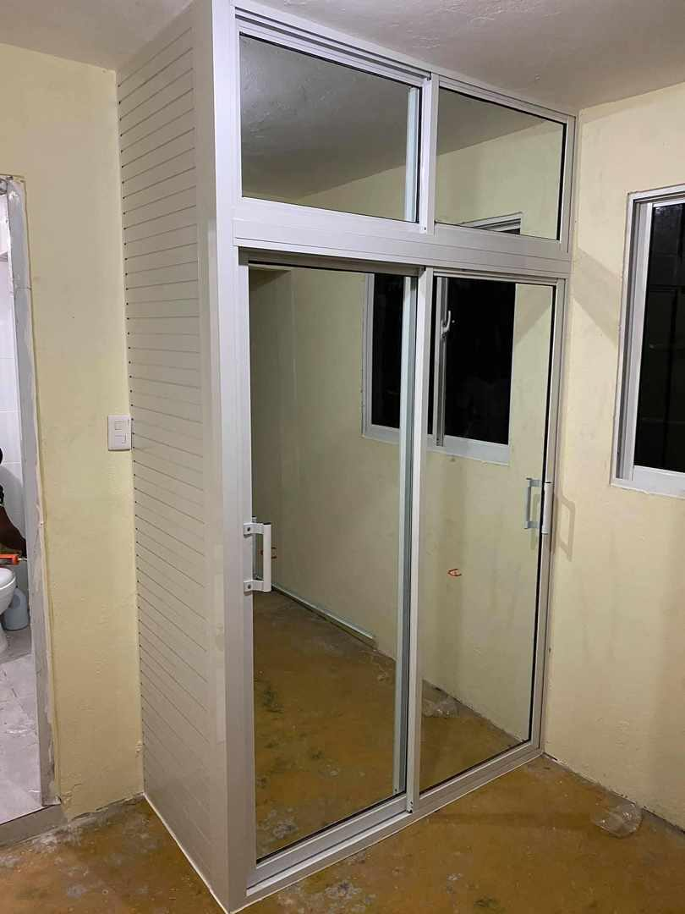
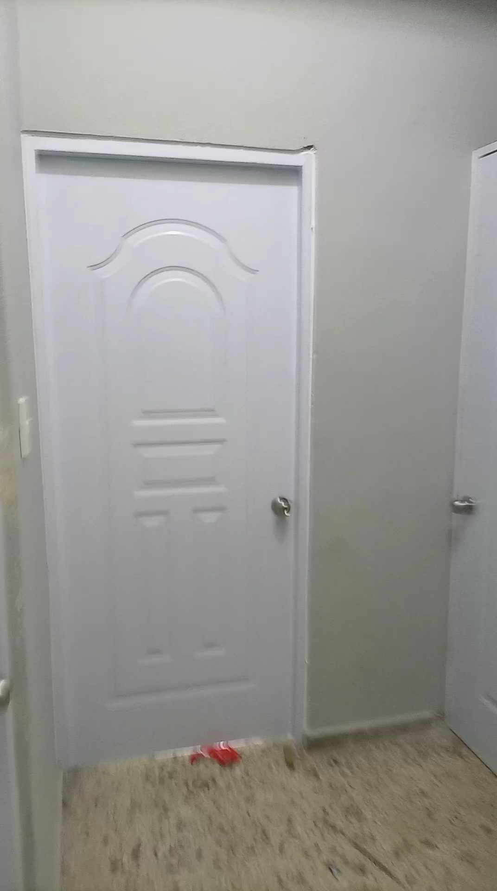
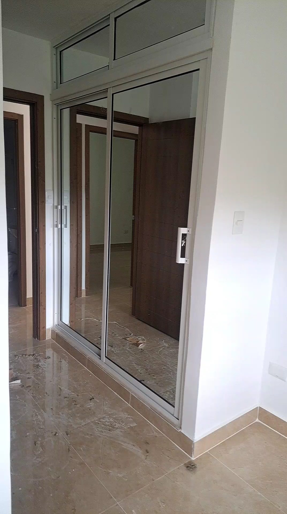

Trabajos realizados
Fotos del perfil del negocio en Google.


Ventanas, puertas, closets con espejo y vidrio cortado a la medida. Mándanos las medidas y te cotizamos.
| Horario | Llama o escribe para confirmar |

Vidrio y aluminio para tu casa o tu negocio, hecho a la medida e instalado.
Ventanería en aluminio y vidrio, a la medida de tu espacio.
Puertas para la casa o el negocio, y cambio de cierre en puertas flotantes de vidrio.
Closets con puertas corredizas de espejo y gabinetes.
Vidrio cortado a la medida que necesites.
Fotos del perfil del negocio en Google.


Una clienta lo cuenta así en Google: "puntuales en fecha de instalación".
Otro cliente escribe que el encargado de cortes de vidrio es "muy amable, profesional y servicial".
"Un negocio completo en ventanería, puertas y gabinetes", dice una reseña.
Excelente servicios, puntuales en fecha de instalación, respetuosos e instalación impecable. Recomendados 100%100
Un negocio completo en ventanería, puertas y gabinetes. El encargado de cortes de vidrio es muy amable, profesional y servicial.
un buen servicio y un trabajo entregado a tiempo
| Horario | Llama o escribe para confirmar |
Escríbenos por WhatsApp con las medidas o una foto del espacio. Si prefieres hablarlo, llámanos.